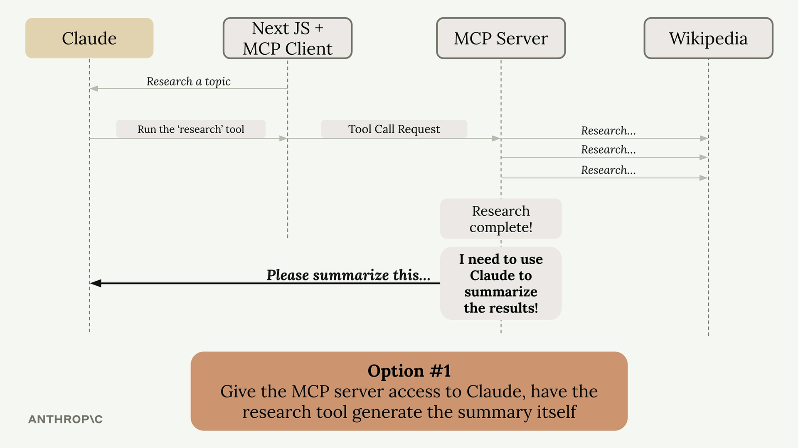
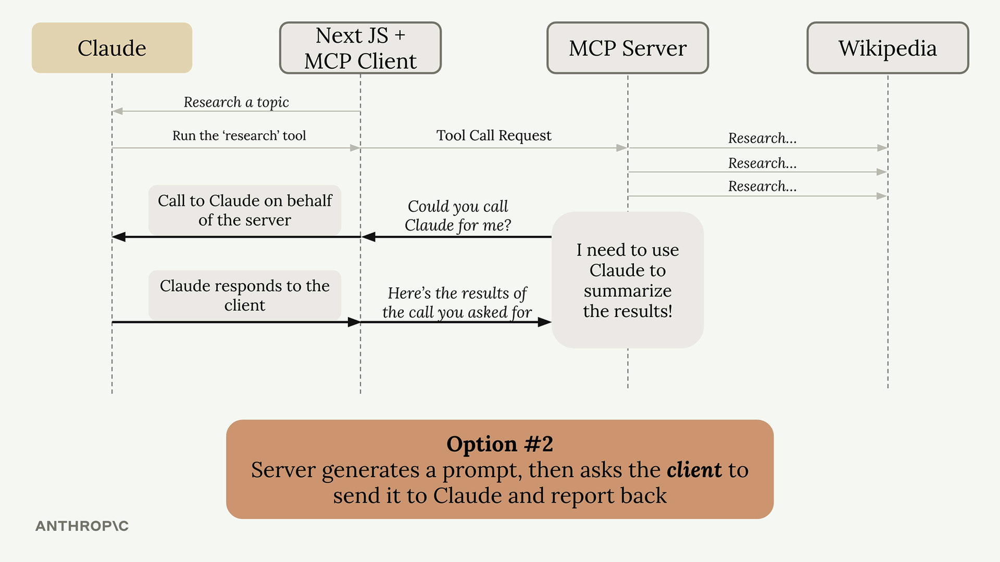
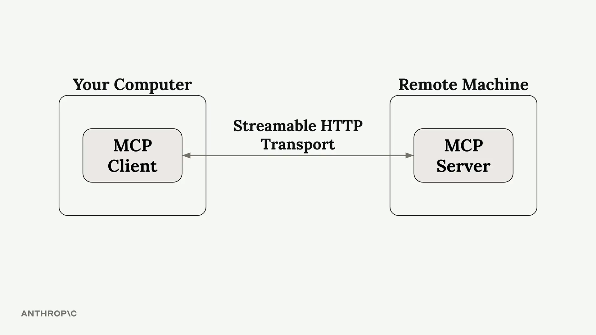
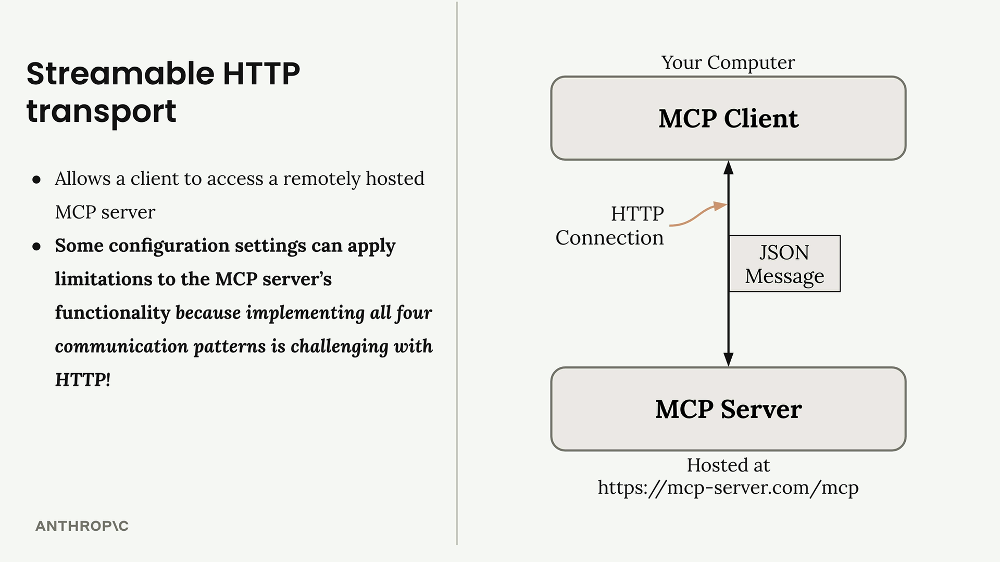

Model Context Protocol: Advanced Topics
MCP ขั้นสูงแบบ hands-on lab — Sampling, notifications, Roots, transports (STDIO/StreamableHTTP) และการจัดการ state ตอนนำ server ขึ้น production
คอร์สนี้เป็น lab (client.py / server.py) ต่อยอดจาก Introduction to MCP — เรียบเรียงตามลำดับบทเรียนจริง แบ่งเป็น 2 ส่วนใหญ่: ความสามารถหลักของ MCP และเรื่อง transports/state
⭐ ความสามารถหลักของ MCP
Sampling
ปกติ client เป็นฝ่ายเรียก server แต่ Sampling กลับด้าน — server สามารถ ขอให้ client (ที่มี LLM อยู่) ช่วยสร้างข้อความ ให้ได้ ใน lab จะเรียก ctx.session.create_message


- Log & progress notifications: ให้ tool function รับ
Contextเป็น argument เพื่อส่ง log/progress กลับ โดย client นิยาม callbacks ไว้รับ - Roots: ให้ผู้ใช้กำหนดไฟล์/โฟลเดอร์ที่ server เข้าถึงได้ (รับ path ผ่าน CLI args) — คุมขอบเขตการเข้าถึง
🔀 Transports และการสื่อสาร
MCP สื่อสารกันด้วย JSON message types และมี transport ให้เลือกตามสถานการณ์:
🖥️
STDIO transport
ใช้เมื่อ client และ server อยู่ เครื่องเดียวกัน
🌐
StreamableHTTP transport
เชื่อม server ระยะไกล ผ่าน HTTP และแก้ปัญหาการส่งข้อมูลจาก server → client


▶
วิดีโอบทเรียน: The StreamableHTTP transportวิดีโอเล่นบนแพลตฟอร์ม Anthropic Academy
ดูในเว็บ (ต้อง login) ↗
⚙️
State และการ deploy ธง
stateless_http และ json_response ใช้คุมพฤติกรรมของ server ตอน scale/deploy🎯 สรุปใจความสำคัญ
- Sampling = server ขอให้ client (ที่มี LLM) สร้างข้อความ ผ่าน
ctx.session.create_message - Notifications ส่ง log/progress ได้ผ่าน Context arg + callbacks ฝั่ง client
- Roots ให้ผู้ใช้กำหนดไฟล์/โฟลเดอร์ที่ server เข้าถึงได้
- STDIO = เครื่องเดียวกัน, StreamableHTTP = server ระยะไกลผ่าน HTTP
- คุม state ตอน deploy ด้วยธง stateless_http / json_response